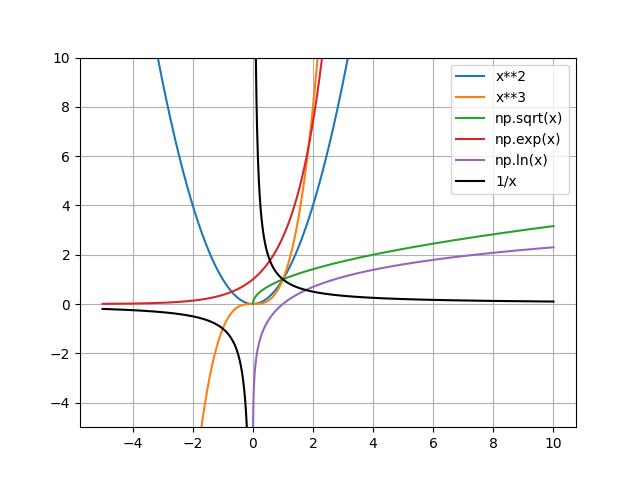

Nous avons les valeurs d'angle remarquables suivantes :
| Degrés | 0° | 30° | 45° | 60° |
| x (en rad) | 0 | π/6 | π/4 | π/3 |
| Degrés | 90° | 120° | 180° | |
| x (en rad) | π/2 | 2π/3 | π |
Nous pouvons donc déduire le cercle trigonométrique suivant :
Nous pouvons donc déduire les valeurs des cosinus et sinus suivantes :
| x | 0 | π/6 | π/4 | π/3 | π/2 |
| cos(x) | 1 | √3/2 | √2/2 | √1/2 | 0 |
| sin(x) | 0 | √1/2 | √2/2 | √3/2 | 1 |
Nous avons plusieurs relations remarquables sur les cosinus :
et idem pour les sinus :
En plus de ces fonctions remarquables, nous avons leurs fonctions inverses : arcsin(x) et arccos(x). Nous avons arccos(x) ∈ [0; π] et arcsin(x) ∈ ] -π 2 ; π 2 [.
On peut définir la tangente comme étant le rapport du sinus et du cosinus. Elle est définie sur ] -π 2 ; π 2 [. Nous avons donc sa représentation graphique suivante :
Ses valeurs remarquables sont :
| x | 0 | π/6 | π/4 | π/3 | π/2 |
| tan(x) | 0 | 1/√3 | 1 | √3 | interdit |
On retrouve donc les propriétés suivantes :
Nous pouvons également donné le graphe de la fonction réciproque de tan(x), la fonction arctan(x) :

Nous pouvons constater que pour la fonction arctan(x), on a :
Les fonctions usuelles sont représentées sur le graphe ci-dessous :
Le nombre dérivé d'une fonction en un point représente le coefficient directeur de la tangente en ce point. En effet, en chaque point nous pouvons tracer une droite qui "colle" à la courbe. On trouve ainsi une droite de la forme y = ax + b dont le coefficient directeur est le nombre dérivé en ce point. Le nombre dérivé en a est noté f'(a). En calculant le nombre dérivé pour chacun des points de la fonction, on obtient la fonction dérivée. En réalité, l'équation d'une tangente est de la forme :
Nous pouvons dresser le tableau qui donne les dérivées de chaque fonction usuelle :
| f(x) | k | xn | 1 x | √x | ex |
| f'(x) | 0 | n.xn-1 | -1 x2 | 1 2√x | ex |
De plus, si nous avons la dérivée de fonctions usuelles avec une opération entre elles, nous avons les relatioon suivante :
| forme de f(x) | u(x) + v(x) | u(x) * v(x) | k * u(x) |
| forme de f'(x) | u'(x) + v'(x) | u'(x).v(x) + u(x).v'(x) | k * u'(x) |
| forme de f(x) | u(x) v(x) | k v(x) | u(x) k |
| forme de f'(x) | u'(x).v(x) - u(x).v'(x) v(x)2 | -k.v'(x) v(x)2 | u'(x) k |
Nous pouvons utiliser la notion de dérivabilité pour déduire le nombre de solutions d'une équation lorsque celle-ci n'est pas résolvable. Ainsi, si nous avons :
alors, l'équation f(x) = k admet une unique solution sur l'intervalle I.